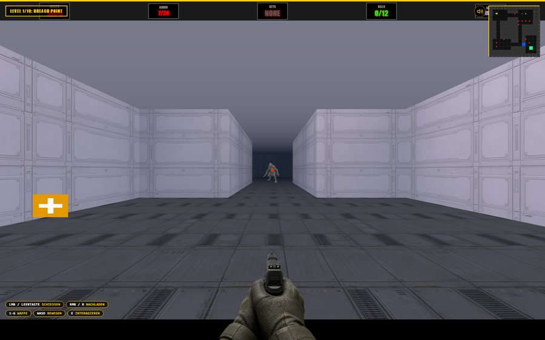

MONOLITH GAMES — PLAYTEST BUILD
— ALIEN BREACH —
ALIEN BREACH
20-wave orbital station siege — 3-corridor defense, 2 sectors
ALIEN BREACH: SALVAGE RUN
10-level maze campaign — Breach Point to The Citadel, never before deployed

ALIEN BREACH: CAMPAIGN
Same 10-level campaign, rebuilt on Alien Breach's engine — 6-weapon progression, 186 enemies, full mobile support
— PRIME TRILOGIE: TERRAN · UMBRA · SCHWARM —
PRIME SECTOR
10-mission RTS campaign — Terran-style, tech tree, research, story — built on Star Prime's engine
UMBRA ASCENDANT
10-mission RTS campaign — shielded Protoss-style race, own tech tree, direct sequel to Prime Sector
SWARM RISING
10-mission RTS campaign — cheap regenerating Zerg-style swarm race, own tech tree, trilogy finale
STAR PRIME
3D RTS skirmish — mine, build, fight 2 AI factions + 1 ally, Quantum Sphere mega-unit
— WEITERE SPIELE —
GNS FRAG ARENA
11-participant AI deathmatch — 10 bots, 3 arenas
WHITEOUT PURSUIT
Merge world — drive/fight open snowfield, siege Permafrost Outpost
SUBGLACIAL
Merge world — submersible siege under the ice, flooding hatches
MOLTEN CANYON
Merge world — lava-canyon buggy siege, environmental lava hazards
ZERO-G SIEGE
Merge world — debris-field thruster-pod siege, orbital elevator
LAST BUS HOME
Narrative dialogue walking-sim — 5 stops, 5 strangers, your own ending
NIGHTSHIFT TAXI
No-GPS Uber-style night driving — 8 fares, 2 might not be real
PRIME CIRCUIT
Mario-Kart-style racer — drift-boost, items, 6 racers, Frost Loop track
GNS FLAG PROTOCOL
5v5 offline capture-the-flag — same arena engine as GNS Frag Arena
GNS: BLACK TIDE
Jaeger squad vs. Kaiju — pilot a mech, hold the Kuroshio breakwater
— TOOLS —
AUDIO TEST
Curated, playable SFX library — 43 sounds, CC0 + self-generated
ELEVENLABS AUDIO TEST
37 AI-generated sounds — wired into Alien Breach + GNS Frag Arena